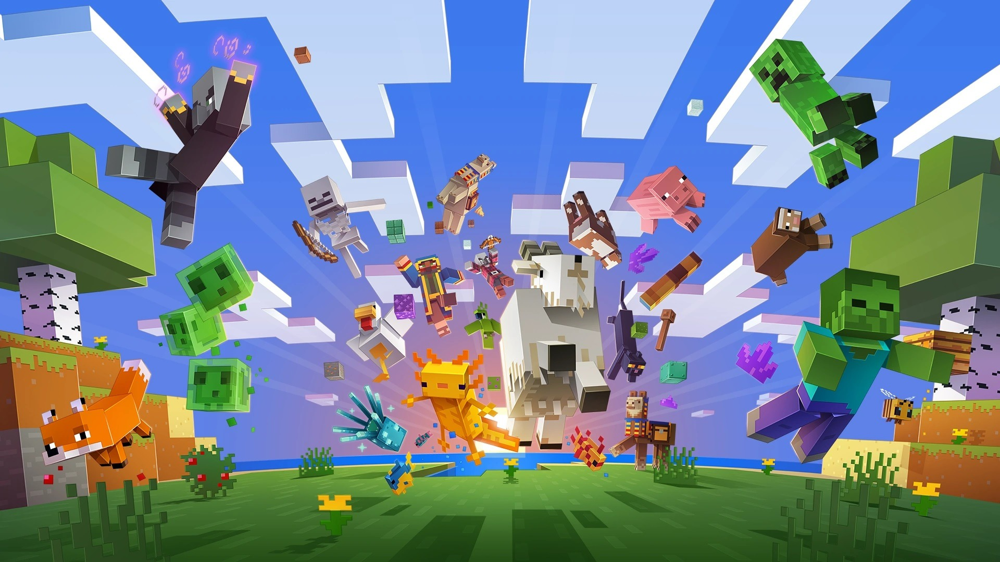

É UM JOGO SOBRE MONTAR BLOCOS E SAIR EM AVENTURAS
se passa em mundos infinitamente gerados de terreno aberto – montanhas geladas, rios pantanosos, vastas pastagens e muito mais – repleto de segredos, maravilhas e perigos!
não existe uma maneira única de jogar Minecraft. Ele é um jogo aberto onde os jogadores decidem por conta própria o que querem fazer!
Mas nós oferecemos diversos modos: o Modo Criativo, onde os jogadores recebem recursos ilimitados para construir qualquer coisa que puderem imaginar; e o Modo Sobrevivência, onde os jogadores devem explorar o mundo e minerar seus recursos para comer, ter onde morar e se defender.
Ou você pode se juntar aos seus amigos on-line e fazer suas próprias regras!
Você pode jogar Minecraft em várias plataformas. Encontre a que combina com você!
O jogo pode ser executado em diversos sistemas operacionais de computadores pessoais (PCs), incluindo Microsoft Windows, macOS e Linux
Além de Minecraft: Java Edition e Minecraft: Windows 10 Edition, existem outras versões de Minecraft para PC, incluindo Minecraft Classic, Minecraft 4K e Minecraft: Education Edition.
Minecraft Classic é uma versão mais antiga de Minecraft, sendo disponibilizada on-line pela primeira vez e podendo ser reproduzida no início do jogo.
Ao contrário das versões mais recentes de Minecraft, a versão Classic é gratuita, embora não seja mais atualizada. Funciona da mesma forma que no modo criativo, permitindo que os jogadores construam e destruam toda e qualquer parte do mundo, sozinho ou em um servidor multijogador.
Não há criaturas controladas por computador nesse modo, e riscos ambientais como lava não danificam os jogadores. Alguns blocos funcionam de maneiras distintas, pois seus comportamentos foram alterados posteriormente durante o desenvolvimento do jogo principal.
Minecraft 4K é uma versão simplificada de Minecraft, semelhante à versão Classic, desenvolvida para o Java 4K Game Programming Contest "em menos de 4 kilobytes".[130] O mapa em si é finito — composto por 64×64×64 blocos — e o mesmo mundo é gerado sempre. O jogador está restrito a colocar ou destruir blocos, que consistem em terra, pedra, madeira, folhas e tijolos.[135] Minecraft: Education Edition é uma versão de Minecraft criada especificamente para instituições de ensino e foi lançada em 1 de novembro de 2016.[131] Inclui um pacote de recursos de química,[136] planos de aula gratuitos no site de Minecraft: Education Edition e duas aplicações complementares gratuitas: Conexão de Código e Modo Sala de Aula.[137] Atualmente, Minecraft: Windows 10 Edition é uma versão exclusiva para o sistema operacional Windows 10. A versão beta foi lançada na Windows Store em 29 de julho de 2015.[138] Nela, os jogadores têm a capacidade de jogar com os amigos via Xbox Live e jogar com vários jogadores locais com os proprietários de Minecraft em outras plataformas Bedrock. Outros recursos incluem a capacidade de usar vários esquemas de controle, como um gamepad, teclado ou tela sensível ao toque (para Microsoft Surface e outros dispositivos com essa funcionalidade), além de suporte à realidade virtual, gravação e capturas de tela.

Em 16 de agosto de 2011, Minecraft: Pocket Edition foi lançado para o Xperia Play no Android Market como uma versão alfa. Foi então lançado para vários outros dispositivos compatíveis com o sistema Android em 8 de outubro de 2011.[140][141] Uma versão de Pocket Edition para iOS foi lançada em 17 de novembro de 2011.[142] Um porte foi disponibilizado para Windows Phone logo após a Microsoft adquirir a Mojang.[143] Pocket Edition se concentra na construção criativa e no aspecto primitivo de sobrevivência do jogo original e não contém todos os recursos do lançamento de PC. Em sua conta no Twitter, Jens Bergensten disse que Pocket Edition é escrito em C++ e não em Java, devido ao fato do iOS não possuir suporte à Java.[144] Atualizações graduais são lançadas periodicamente para aproximar o porte da versão de PC.[145] Em 10 de dezembro de 2014, em cumprimento à aquisição da Mojang pela Microsoft, um porte de Pocket Edition foi lançada para o Windows Phone 8.1.[146] Em 19 de dezembro de 2016, a versão completa de Pocket Edition foi lançada para iOS, Android e Windows Phone. Em 18 de janeiro de 2017, a Microsoft anunciou que não manteria mais as versões de Pocket Edition para Windows Phone e Windows 10 Mobile, devido a descontinuação desses sistemas operacionais.[147] Em 31 de julho de 2017, o subtítulo Pocket Edition foi descartado e os aplicativos foram renomeados apenas para Minecraft.[148] O motor gráfico de Pocket Edition, conhecido como "Bedrock", foi portado para plataformas não-mobile: Windows 10, Xbox One, Gear VR, Apple TV, Fire TV, Nintendo Switch e PlayStation 4.[149][150][151][152] As versões do jogo no motor "Bedrock" são coletivamente chamadas de Bedrock Edition.
Redes sociais como YouTube, Facebook e Reddit tiveram um papel fundamental na popularização de Minecraft.[278] Uma pesquisa realizada pela Annenberg School for Communication da Universidade da Pensilvânia mostrou que um terço dos jogadores de Minecraft aprenderam sobre o jogo através de vídeos na Internet.[279] Em 2010, vídeos relacionados a Minecraft começaram a ganhar influência no YouTube. Esses vídeos geralmente contêm captura de tela do jogo e narração.[280] A cobertura comum nos vídeos inclui criações feitas por jogadores, orientações de várias tarefas e paródias de obras da cultura popular. Em maio de 2012, foram enviados mais de quatro milhões de vídeos no YouTube relacionados a Minecraft.[281] Alguns influenciadores populares receberam emprego na Machinima, uma empresa de jogos eletrônicos que possuía um canal de entretenimento altamente popular no YouTube.[280] A The Yogscast é uma empresa britânica que produz regularmente vídeos sobre Minecraft; o canal no YouTube alcançou bilhões de visualizações e o painel na MineCon 2011 teve a sua maior participação.[280][282] Outros conhecidos no YouTube incluem Jordan Maron, que criou muitas paródias de Minecraft, incluindo "Minecraft Style", uma paródia do single de sucesso internacional "Gangnam Style" do rapper sul-coreano Psy.[283] Herobrine é um importante ícone da comunidade de Minecraft, que apareceu pela primeira vez como uma imagem em um painel no 4chan. Segundo rumores, Herobrine aparece no mundo dos jogadores e constrói construções estranhas.[284] No entanto, a Mojang confirmou que Herobrine nunca existiu em Minecraft e que não há planos de adicioná-lo no jogo.[285] Minecraft foi mencionado em outros jogos, como Torchlight II, Borderlands 2, Choplifter HD, Super Meat Boy, The Elder Scrolls V: Skyrim, The Binding of Isaac, The Stanley Parable e FTL: Faster Than Light.[286][287] Também foi referenciado pelo artista de música eletrônica deadmau5 em suas performances.[288] Uma simulação do jogo foi apresentada no videoclipe da canção "G.U.Y." da cantora Lady Gaga.[289] O jogo também é referenciado fortemente em "Informative Murder Porn", o segundo episódio da décima sétima temporada da série de televisão animada South Park.[290] "Luca$", o décimo sétimo episódio da vigésima quinta temporada da série animada Os Simpsons, foi inspirado em Minecraft.